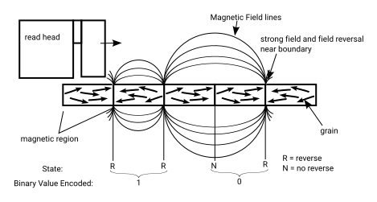
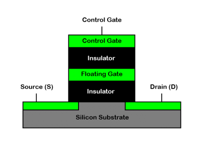
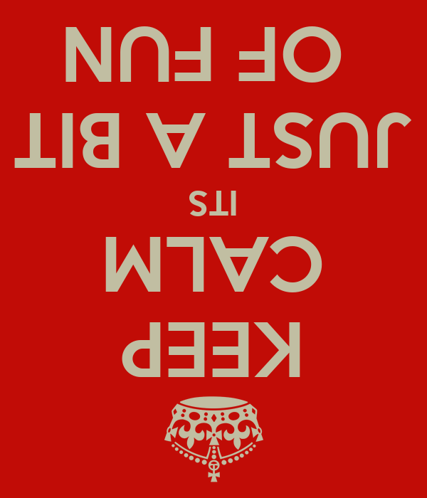
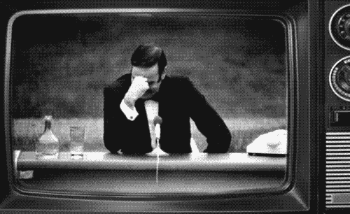
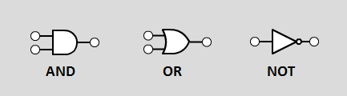
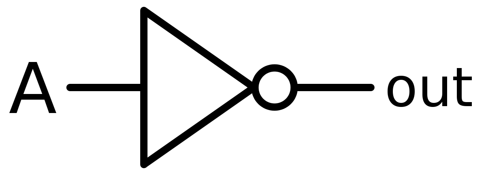
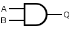
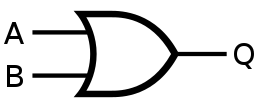
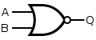

To get acquainted with:

| Floating gate state | Binary value assigned |
|---|---|
| Charge | 0 |
| No charge | 1 |


The Answer to the Ultimate Question of Life, the Universe and Everything
42
There are 10 types of people in the world, those who understand binary and those who don't.
There are 10 types of people in the world, those who understand binary, those who don't and those who know ternary as well.
Decimal
Ten different digits:
0, 1, 2, 3, 4, 5, 6, 7, 8, 9
| 103 | 102 | 101 | 100 |
| 1000 | 100 | 10 | 1 |
Binary
Two different digits:
0, 1
| 29 | 28 | 27 | 26 | 25 | 24 | 23 | 22 | 21 | 20 |
| 512 | 256 | 128 | 64 | 32 | 16 | 8 | 4 | 2 | 1 |
Let's try to write some numbers!
Write down your birthday in binary digits… And yes, use the whole year :)
Use a table like before
| 210 | 29 | 28 | 27 | 26 | 25 | 24 | 23 | 22 | 21 | 20 |
| 1024 | 512 | 256 | 128 | 64 | 32 | 16 | 8 | 4 | 2 | 1 |
Or an algoritme
Divide the given decimal number by 2 and note both the quotient and the remainder.
The remainder is either 0 or 1.
| 29 | 28 | 27 | 26 | 25 | 24 | 23 | 22 | 21 | 20 |
| 512 | 256 | 128 | 64 | 32 | 16 | 8 | 4 | 2 | 1 |
Bitwise addition



Truth table
| A | Output |
|---|---|
| 0 | 1 |
| 1 | 0 |

Truth table
| A | B | Output |
|---|---|---|
| 0 | 0 | 0 |
| 0 | 1 | 0 |
| 1 | 0 | 0 |
| 1 | 1 | 1 |

Truth table
| A | B | Output |
|---|---|---|
| 0 | 0 | 0 |
| 0 | 1 | 1 |
| 1 | 0 | 1 |
| 1 | 1 | 1 |
Visit: https://logic.ly/demo/ or click the image.
Use the simulator at https://logic.ly/demo/ to fill out the truth tables for the new gates.
NAND
\(\overline{A.B}\)
| A | B | Output |
|---|---|---|
| 0 | 0 | ? |
| 0 | 1 | ? |
| 1 | 0 | ? |
| 1 | 1 | ? |
NOR
\(\overline{A+B}\)

| A | B | Output |
|---|---|---|
| 0 | 0 | ? |
| 0 | 1 | ? |
| 1 | 0 | ? |
| 1 | 1 | ? |
It's even possible to build all logic gates using only NAND gates or NOR gates, but that's for another lesson.